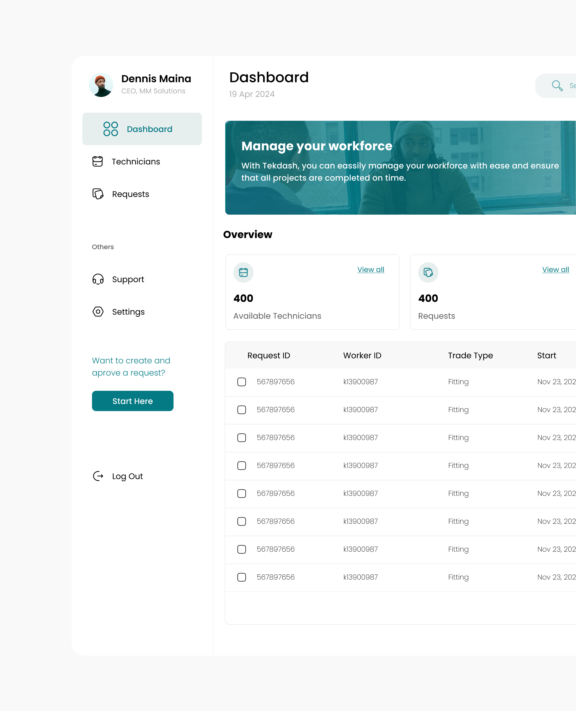

M-motors Motorcycle market

Introduction
Welcome to my creative realm! I'm Dennis Maina, a dedicated UI/UX Designer. Enthusiastic about the harmony of aesthetics and functionality, I specialize in crafting seamless digital experiences that make an impact. From wireframes to pixel-perfect designs, I invest my passion into every project, ensuring intuitive navigation and stunning visuals. I find joy in crafting digital solutions that not only meet but exceed expectations. My journey in the realm of UI/UX design is driven by a relentless pursuit of innovation and a deep-seated commitment to user-centric solutions. Dive into my portfolio, and let's collaborate to enhance your digital presence together!


Problem statement
Welcome to my creative realm! I'm Dennis Maina, a dedicated UI/UX Designer. Enthusiastic about the harmony of aesthetics and functionality, I specialize in crafting seamless digital experiences that make an impact. From wireframes to pixel-perfect designs, I invest my passion into every project, ensuring intuitive navigation and stunning visuals. I find joy in crafting digital solutions that not only meet but exceed expectations. My journey in the realm of UI/UX design is driven by a relentless pursuit of innovation and a deep-seated commitment to user-centric solutions. Dive into my portfolio, and let's collaborate to enhance your digital presence together!
User Experience
Welcome to my creative realm! I'm Dennis Maina, a dedicated UI/UX Designer. Enthusiastic about the harmony of aesthetics and functionality, I specialize in crafting seamless digital experiences that make an impact. From wireframes to pixel-perfect designs, I invest my passion into every project, ensuring intuitive navigation and stunning visuals. I find joy in crafting digital solutions that not only meet but exceed expectations. My journey in the realm of UI/UX design is driven by a relentless pursuit of innovation and a deep-seated commitment to user-centric solutions. Dive into my portfolio, and let's collaborate to enhance your digital presence together!
Conclusion
Welcome to my creative realm! I'm Dennis Maina, a dedicated UI/UX Designer. Enthusiastic about the harmony of aesthetics and functionality, I specialize in crafting seamless digital experiences that make an impact. From wireframes to pixel-perfect designs, I invest my passion into every project, ensuring intuitive navigation and stunning visuals. I find joy in crafting digital solutions that not only meet but exceed expectations. My journey in the realm of UI/UX design is driven by a relentless pursuit of innovation and a deep-seated commitment to user-centric solutions. Dive into my portfolio, and let's collaborate to enhance your digital presence together!